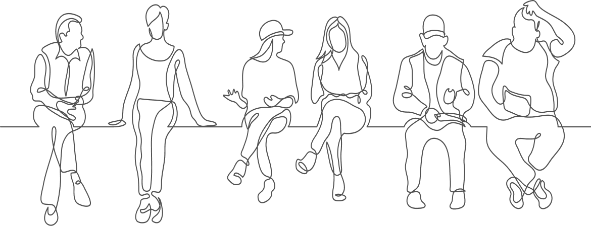
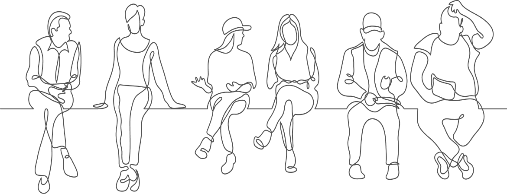

申し込み
定員 : 各会場30人まで
 

千葉県内の学生がオープンデータを活用し地域の活性化や課題を解決するためのアイデアを豊富に生み出す。
検討されたアイデアが地域活性化や課題解決に繋がるよう、県内のネットワーク活動を行う。
防災
想定される課題
１、防災、直下地震、液状化の発生
（千葉地域、葛南地域、東葛飾地域）
２、災害時の東京や千葉市など都心部からの帰宅難民等
３、観光地域で発災した際の地域での収容
| DAY1 | DAY2 | |
|---|---|---|
| 千葉工業大学 詳細はこちら | 8/5(月) | 8/23(金) |
| 麗澤大学 詳細はこちら | 8/6(火) | 8/22(木) |
| 開催時間 | 10:00~17:00 千葉大学のみ9:15~16:30 |
|
スケジュール
DAY1
DAY2
アイデアの発表資料の例
審査で選出されたチームはブラッシュアップ会を行います。
ブラッシュアップ会ではメンターと相談しながらより良いアイデアに磨き上げます。
アイデアそのものと、プレゼンについてのブラッシュアップがあります。
全２回開催
参加者はアイデアソン後、発表会・交流会に参加できます。
定員 : 各会場30人まで
千葉県